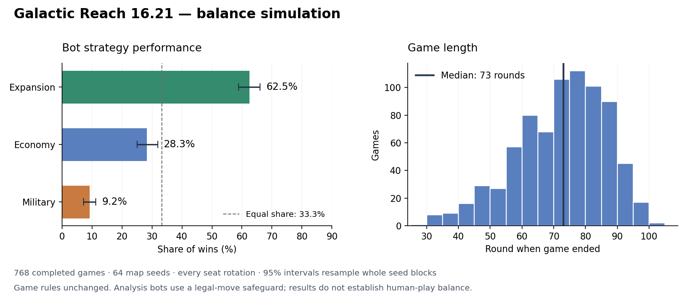

Study date: November 11, 2026 · Compact Frontier · Source commit 30ac7a94133b8d493c4856f95999eda255405dc8
Assessment: the current browser bot profiles have a large performance gap, games take many rounds, and seat effects deserve investigation. Bot defects prevent a confident conclusion about balance between equally skilled human strategies. No game rules were changed for the main tournament. The follow-up study identifies major causes of the measured seat effect.
The main mixed tournament uses 64 map seeds. Each seed runs all four seat rotations for each of the three possible duplicated profiles. Each profile therefore appears in 1,024 player-seats. An equal-strength reference is 33.3% of wins per profile, or 25% wins per player appearance. Intervals below resample entire seed blocks 2,000 times.
| Profile | Wins / 768 | Share of wins | 95% interval | Wins / appearances | Mean colonies |
|---|---|---|---|---|---|
| Expansion | 480 | 62.5% | 58.9–66.0% | 46.9% | 4.51 |
| Economy | 217 | 28.3% | 25.0–31.9% | 21.2% | 3.17 |
| Military | 71 | 9.2% | 7.2–11.3% | 6.9% | 1.28 |
These results compare the existing heuristics with the movement safeguard. Other weaknesses, including unaffordable build priorities and limited strategic planning, remain. They do not show that an optimal military strategy loses to an optimal expansion strategy.

Median game length was 73 rounds; the 10th–90th percentile range was 51–88. Identical-profile games had a median of 89 rounds. There were 9.3 battles per mixed game on average. Bot rounds cannot be translated directly into human session minutes.
| Winning score component | Mean Prestige |
|---|---|
| Colonies | 5.09 |
| Extra frontier colonies | 1.83 |
| Shipyard pairs | 0.43 |
| Excavations | 3.87 |
| Purchased cards | 8.80 |
Winners bought 70.6 cards on average. Card purchases supplied 44.0% of their final Prestige. This is a pacing and scoring signal to test with competent bots and people; it does not establish a human-optimal purchase strategy.
The main mixed tournament favored starting seat 1 (30.6% wins) over seat 3 (19.4%). The separate identical-bot control below varies the initial first-player marker while keeping the same maps and decks:
| Seat identity / home | Wins / 384 | Win share | 95% interval |
|---|---|---|---|
| 1 | 139 | 36.2% | 30.2–42.2% |
| 2 | 100 | 26.0% | 21.1–31.2% |
| 3 | 36 | 9.4% | 6.8–12.2% |
| 4 | 109 | 28.4% | 22.7–34.6% |
The initially first actor won 100 of 384 controls (26.0%), close to the 25% reference. Thus starting first alone does not explain the seat pattern. Seat identity, initial deck allocation, home position, resource orientation and deterministic policy ordering are still coupled. Stable East-first Shipyard placement and fixed BFS tie ordering are plausible contributors. This does not prove unfair world geometry. The 96 controls with the standard initial marker exactly reproduce the corresponding earlier identical-bot results.
| Matchup | Attacker takes hex | Mutual destruction | Defender survives / holds |
|---|---|---|---|
| 1 Fleet vs 1 Fleet | 4 | 19 | 13 |
| 2 Fleets vs 2 Fleets | 7 | 5 | 24 |
| 2 Fleets vs 1 Fleet | 36 | 0 | 0 |
| 1 Fleet vs 2 Fleets | 0 | 0 | 36 |
| 1 Fleet vs defending Settler | 36 | 0 | 0 |
| attacking Settler vs 1 Fleet | 0 | 0 | 36 |
| 1 Fleet vs 2 defending Settlers | 18 | 0 | 18 |
| 1 Explorer vs defending Settler | 0 | 0 | 36 |
| 1 Fleet vs 1 Explorer (no escape) | 36 | 0 | 0 |
| 1 Fleet + Explorer vs 1 Fleet | 24 | 12 | 0 |
Each row contains 36 enumerated pairings. These are cases, not outcome probabilities: players choose tactics and some sequences share an early prefix before combat ends. There are no regular-card reactions or Shipyards, Explorers stay and fight, and retreat space is available. One Fleet versus one Fleet has 19 mutual destructions, four attacker wins and 13 defensive outcomes. A single defending Settler loses to a Fleet in every pairing; two defending Settlers hold in 18 of 36. These are useful playtest cases for the intended ship roles.
The native analysis runner matched all 15 reported score, colony, relic, Shipyard and purchase averages of the old VM harness on its 12 current-rule smoke seeds. Observers consume no RNG. The production checkout remained clean.
node run.cjs --engine /path/to/16.21/checkout --mode browser --seeds 64 --rounds 160 --workers 4 --output browser.jsonl node run.cjs --engine /path/to/16.21/checkout --mode guarded --seeds 64 --rounds 160 --workers 4 --output guarded.jsonl node run.cjs --engine /path/to/16.21/checkout --mode guarded --order-control 1 --seeds 32 --rounds 160 --workers 4 --output order-control.jsonl python3 analyze.py python3 plot.py
Full statistics · Player results CSV · Baseline raw games · Safeguarded raw games · First-player controls · Combat cases · Rust diagnostic · Harness validation